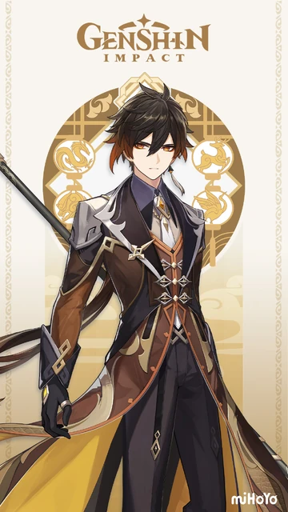

Liyue · Character Records
Zhongli and Morax
Zhongli is the mortal identity used by Morax, the Geo Archon known in Liyue as Rex Lapis.

The Prime of the Adepti and the Foundation of Liyue
Known to history as Rex Lapis, the Lord of Geo, and the God of Contracts, Morax is the oldest among the Seven Archons, having walked Teyvat for over six thousand years. As the Prime of the Adepti, he led celestial beasts, illuminated spirits, and mortal tribes through the brutal fires of the Archon War. With stone spears the size of mountains—now standing as the towering pillars of Guyun Stone Forest—he pinned down and sealed malevolent ancient gods such as Osial, securing peace for the people of the Geo realm.
In partnership with the Goddess of Dust, Guizhong, Morax first gathered his people on the fertile Guili Plains. After Guizhong tragically perished during a catastrophic battle in the Archon War, Morax led the grieving survivors south to the sea, establishing Liyue Harbor 3,700 years ago. There, he minted the very first Mora from his own golden flesh, establishing commerce and contracts as the bedrock of mortal society.
The Contract to End All Contracts
For nearly four millennia, Rex Lapis personally descended every year during the Rite of Descension to deliver divine prophecies that guided Liyue's trade and agricultural policies. However, as the centuries dragged on, he witnessed the onset of Erosion in his dearest allies—such as the dragon Azhdaha—and realized that his eternal presence would eventually rob humanity of their ability to stand on their own feet.
To test whether Liyue was ready to govern itself, Morax staged his own dramatic 'assassination' in collaboration with the Fatui Harbinger Childe and the Tsaritsa. When the Liyue Qixing, the Millelith, and the Adepti united to defeat the resurrected sea god Osial without his divine intervention, Morax knew his mission was complete. He fulfilled his final divine contract, handing over his Geo Gnosis to Signora in exchange for a mysterious, sovereign agreement with Snezhnaya.
Life as Zhongli at Wangsheng Funeral Parlor
Having surrendered his divine status, Morax now lives in mortal guise as Zhongli, a dignified and impossibly knowledgeable consultant for the Wangsheng Funeral Parlor under Director Hu Tao. Possessing unparalleled mastery over tea, porcelain, minerals, opera, and traditional history, Zhongli navigates mortal society with calm dignity—though he famously struggles with the practical concept of carrying Mora in his own pockets, having spent millennia creating it out of thin air.
In his mortal life, Zhongli maintains a solemn duty to tradition and closure. His position at Wangsheng ensures that the ancient ceremonies honoring fallen warriors and gods are carried out with perfect dignity, allowing Liyue's past to rest peacefully while its future strides forward.
The Burden of Erosion and Unspoken Oaths
Zhongli's deep wisdom is tinged with the profound sorrow of outliving nearly everyone he ever loved. He witnessed Guizhong dissolve into dust, watched his Yaksha protectors succumb to karmic madness until only Xiao remained, and was forced to seal his ancient friend Azhdaha beneath the Dragon-Queller tree when Erosion corrupted the dragon's mind.
When questioned by the Traveler regarding the Cataclysm and the destruction of Khaenri'ah, Zhongli explicitly refuses to answer, explaining that he signed an ancient contract that predates the disaster requiring his silence. As the God of Contracts, he will not break his word even if it means bearing the weight of history alone, standing as an immovable witness to Teyvat's unfolding destiny.
This is an original CoreGG reading guide, not an official HoYoverse article or a reproduction of the game text. Source links below identify the records used so you can check the original context.
Sources & references
Check these sources for the original game text and reference trail.